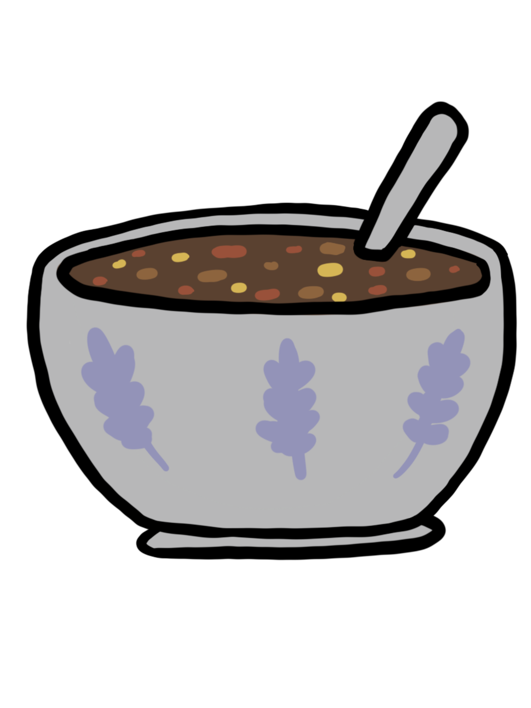
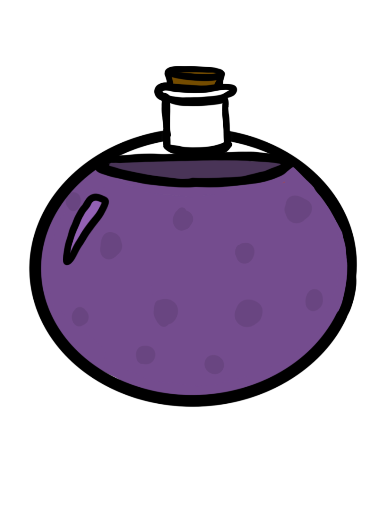

STARTING INVENTORY

Lentil Soup

Prune Juice
Ol' Reliable
HISTORY
A retired teacher from a middle class school district. Spent career teaching the basic principles of math, science and history to elementary age kids. Now a day spends time cooking for the grandkids and tending to the small backyard garden where she plants tomatoes, carrots, and brussle sprouts. She has a mean right hook with her sewing needles, crafting a scarf for every grandkid yearly no matter the age and attends martial arts classes at her local retirement community center for fitness and fun. She walks with a cane due to an injury she sustained after throwing her hands up too hard while arguing with Caroline about the proper ingredients for the perfect lentil soup.
STRENGTHS
- Comunication
- Math, Science, History
- Baking Cookies
- The Perfect Soup
- Taxes
WEAKNESSES
- New Technology
- Giving Driving Directions
- Driving the speed limit
- Caroline next door